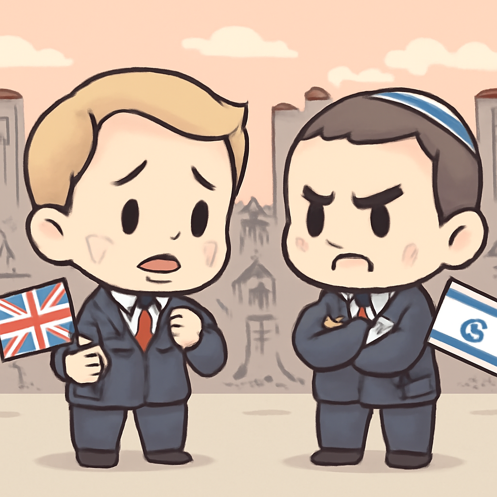
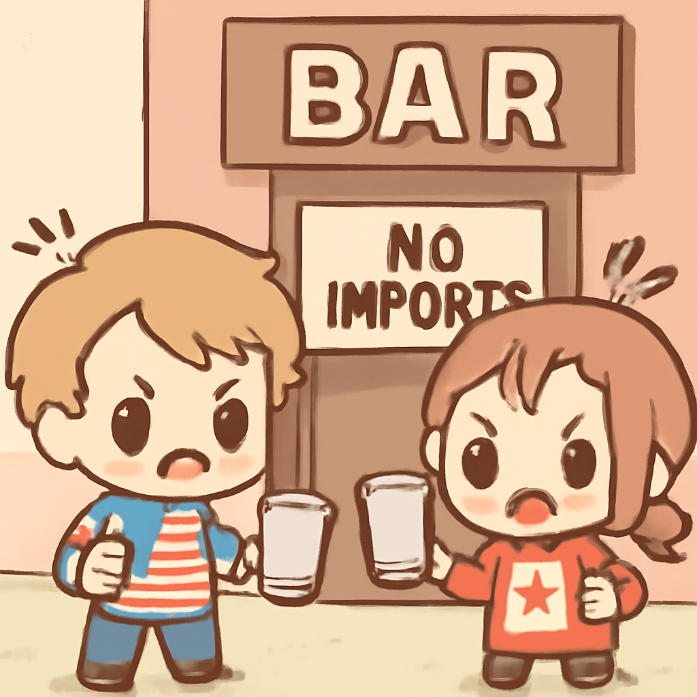
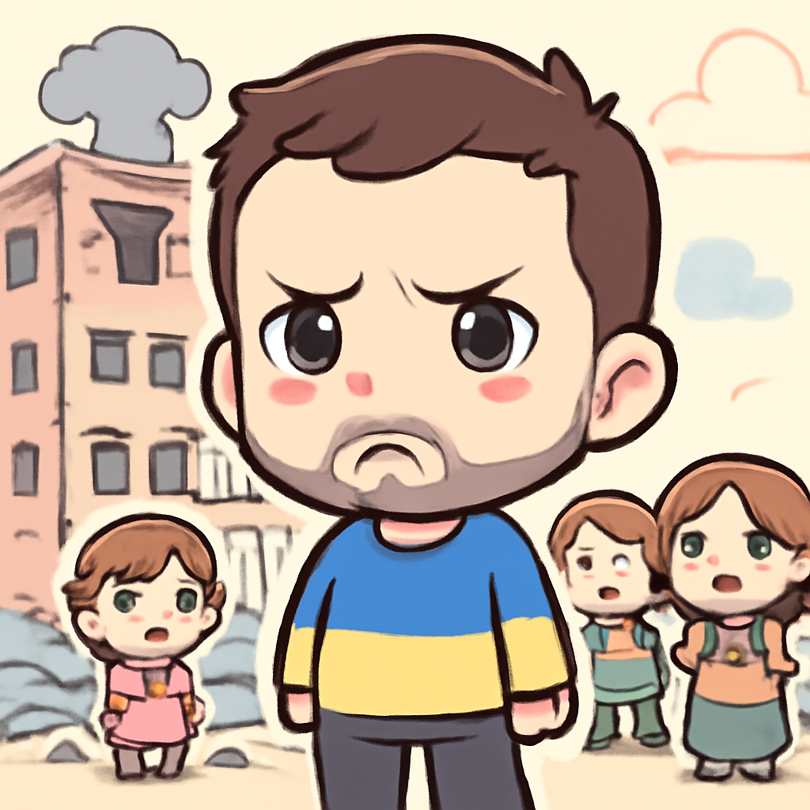
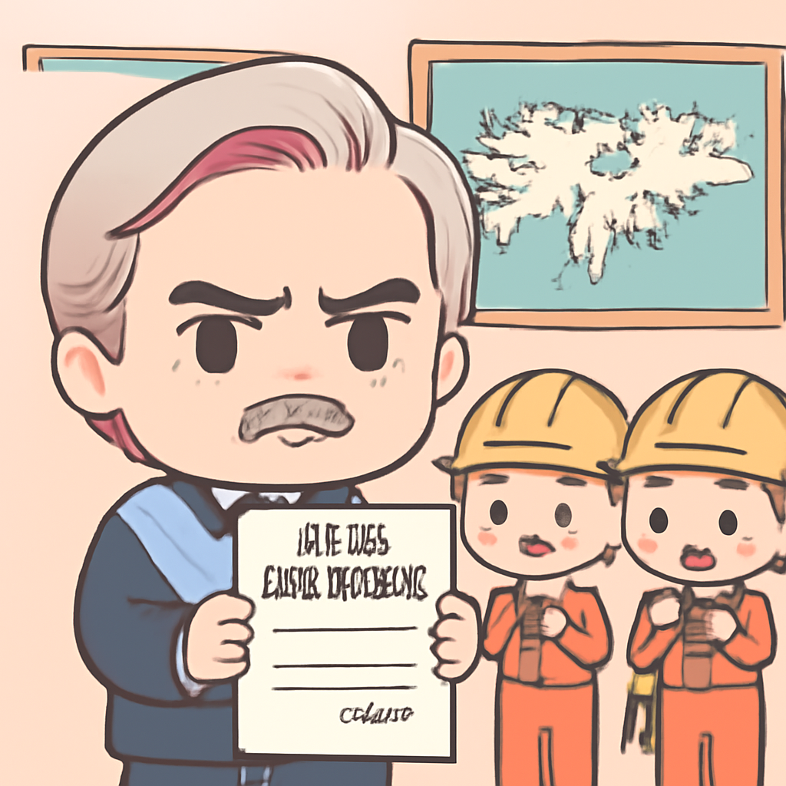
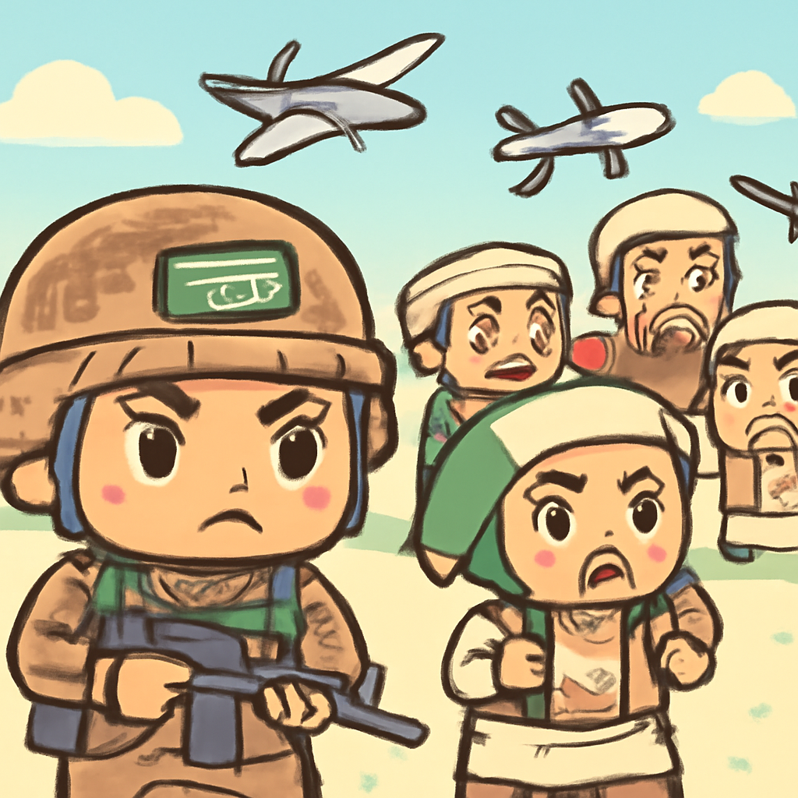

其一 · 英國倫敦 · 對以色列西岸定居點制裁
英國因以色列定居點問題對其制裁，導致雙方緊張升級。

英國倫敦近日宣布對以色列在西岸的定居點實施制裁，外長甚至指責這些定居者在進行「種族清洗」。以色列則迅速關閉了英國在東耶路撒冷的領事館，雙方的緊張關係迅速升級。此事件顯示出國際社會對以色列政策的強烈反應，未來可能影響整個中東的局勢。希望別讓外交關係變成一場籃球比賽，雙方都在互相投擲球。
🔗 原始新聞 ↗
2026-09-09 · 以古觀今，以笑抗愁
英國因以色列定居點問題對其制裁，導致雙方緊張升級。

英國倫敦近日宣布對以色列在西岸的定居點實施制裁，外長甚至指責這些定居者在進行「種族清洗」。以色列則迅速關閉了英國在東耶路撒冷的領事館，雙方的緊張關係迅速升級。此事件顯示出國際社會對以色列政策的強烈反應，未來可能影響整個中東的局勢。希望別讓外交關係變成一場籃球比賽，雙方都在互相投擲球。
🔗 原始新聞 ↗
美國對加拿大酒類商品實施禁令，貿易戰升級。

美國華府近日對來自加拿大的酒類商品等產品實施禁令，這是兩國貿易戰的最新升級。加拿大則已經開始對美國商品施加報復性關稅。這場貿易戰不僅影響兩國的經濟，也讓消費者心中多了幾分疑惑，難道未來的派對要改喝水了？
🔗 原始新聞 ↗
基輔遭俄羅斯無人機襲擊，造成五人死亡。

烏克蘭基輔近日遭到俄羅斯無人機的襲擊，造成五人不幸遇難。烏克蘭總統澤倫斯基形容此次事件為「俄羅斯的退步新篇章」，顯示局勢依然緊張。這場衝突不僅影響當地民眾的安全，也讓國際社會再次關注烏克蘭的困境。希望和平能早日回到這片土地。
🔗 原始新聞 ↗
阿根廷對福克蘭油企提出刑事訴訟，主權問題再升溫。

阿根廷布宜諾斯艾利斯近日宣布將對在福克蘭群島活動的油公司提起刑事案件，這一舉措緊接著新任總統米萊加強對福克蘭的主權聲明。此舉引發了對於阿根廷和英國之間緊張關係的擔憂，而這場主權之爭恐怕還將持續。希望這場爭議別像油漬一樣，越來越難以清理。
🔗 原始新聞 ↗
侯西派攻擊沙國城市，造成73人受傷。

沙烏地阿拉伯近日遭到侯西派的攻擊，造成73人受傷，並引發油氣設備的火災。沙國當局表示將作出回應，似乎又要準備迎接新一輪的衝突。這場衝突不僅影響當地安全，也讓全球油市感到緊張，希望大家能早日找到和平的解決方案。
🔗 原始新聞 ↗